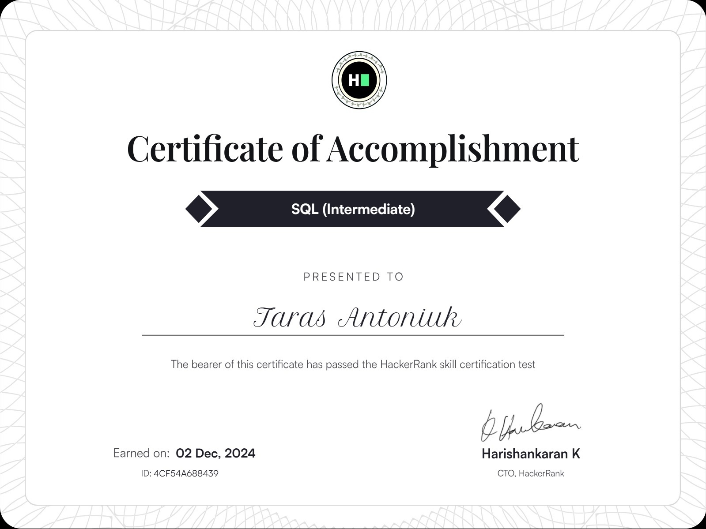
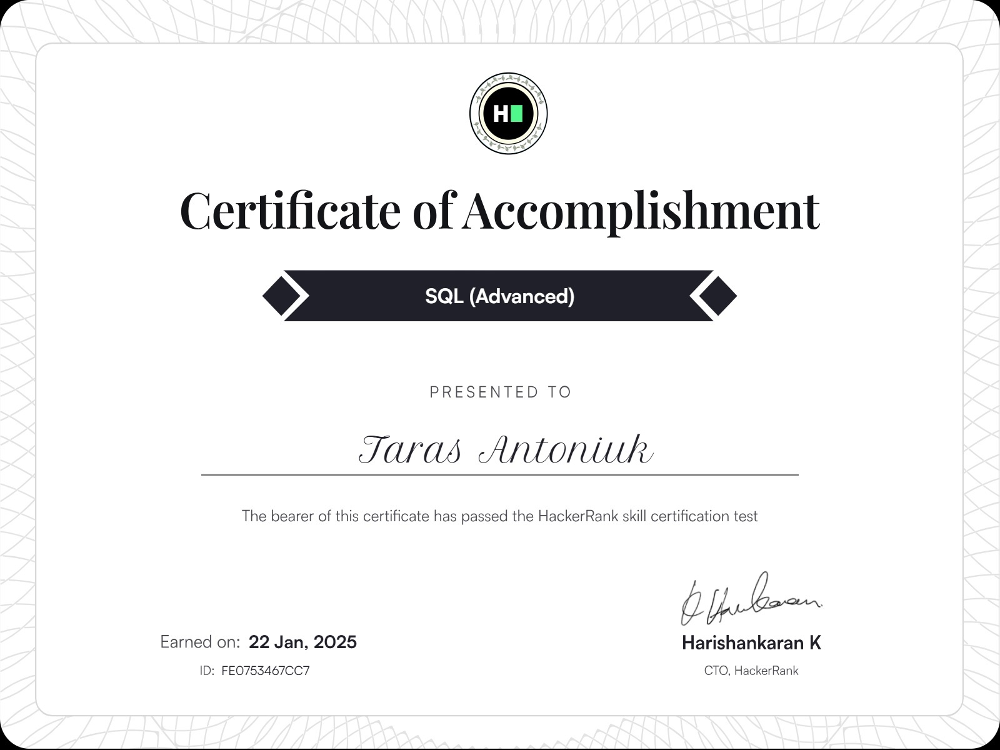

HackerRank Certificates
Java Basic – May 2025
Classes, data structures, inheritance, exception handling, etc.
Expected proficiency: Java 7 or Java 8
View on HackerRank

SQL Intermediate – Dec 2024
Complex joins, unions, sub-queries
Focus: Efficient data manipulation and analysis
View on HackerRank

SQL Advanced – Jan 2025
Query optimization, data modeling, indexing, window functions, pivots
Focus: Advanced SQL for performance and data modeling
View on HackerRank